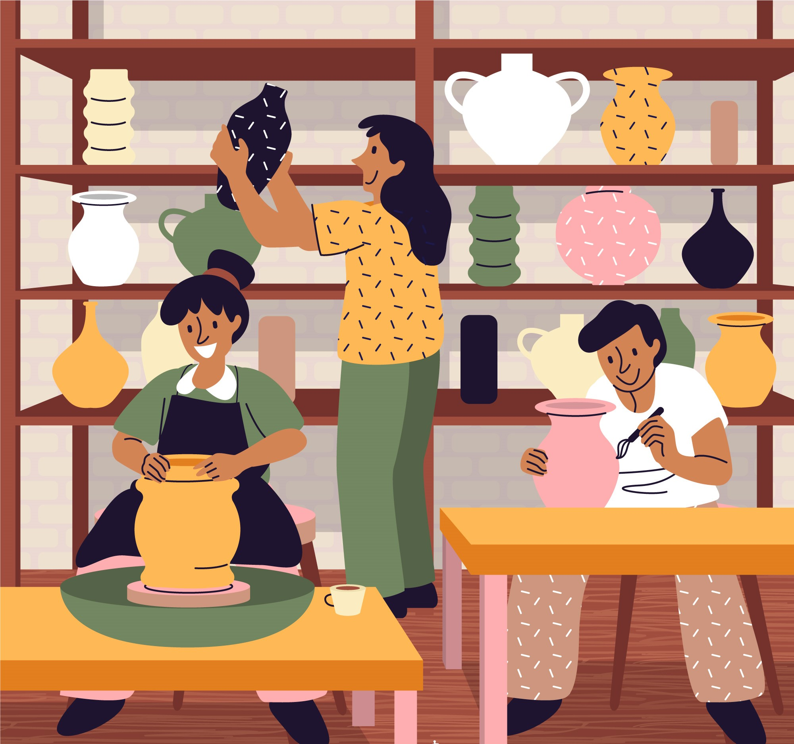

Bienvenides a Ceramic Studio
Creamos productos en cerámica cuidando todos los detalles para que cada objeto sea único.

Sobre el proyecto
Ceramic Studio surge de la necesidad de crear y de darle forma a las ideas. Es una tienda que ofrece todo lo que necesitas para armar tu nuevo espacio. Vas a encontrar desde tazas, vajillas y utensilios de cocina, hasta macetas y accesorios de decoración. Todos nuestros diseños son simples, limpios y atemporales, que pueden lucir bien en cualquier espacio.